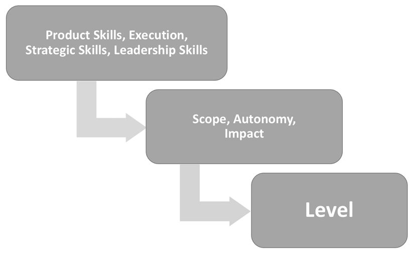
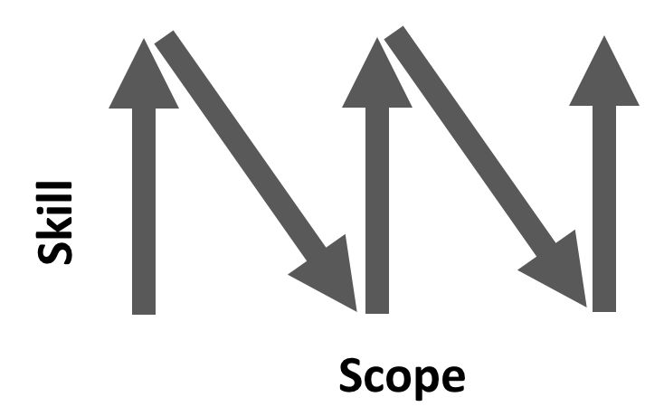
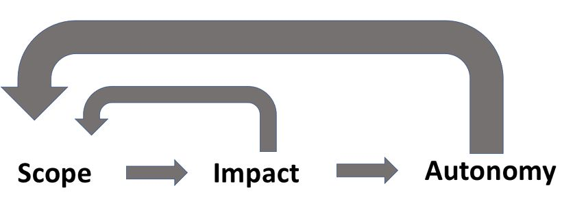
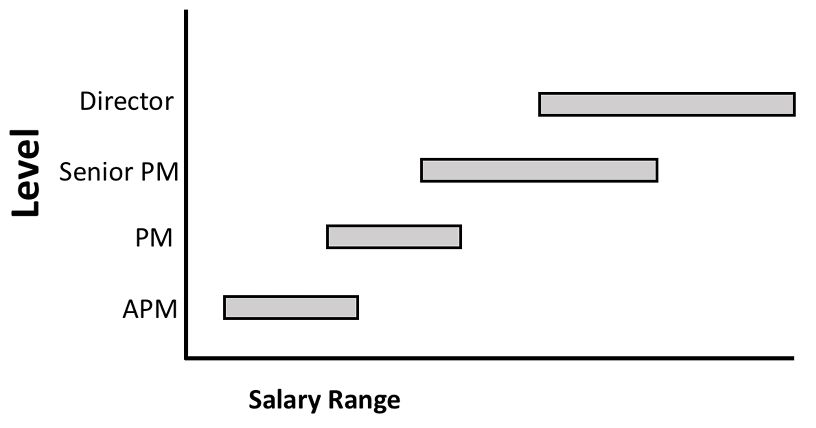

Chapter 32
The first time I really thought about my career growth was after a year of working full-time. I was a PM on the Microsoft SharePoint team, and I was asked to write my career goals as part of a self-review. I wondered if it would sound too ambitious to write down "CEO." I looked at the job ladder documentation for a hint, but how could I "set strategy for a product line" when I only owned a few features?
I was eager to grow and learn, but I didn't really understand what it was that I needed to learn. My features were well designed—wasn't that enough? I kept hearing that I would grow through on-the-job experience, but that sounded very vague and unsatisfying. My manager and teammates were constantly sharing useful advice, but I felt like I could grow faster if I just knew which areas to focus on.
Later, at Google, I hit a similar stumbling block. I thought things were going well until I missed out on a promotion. Apparently, the promotion committee expressed concerns that I wasn't strategic enough, and that one of my team's major projects hadn't launched yet. Even though it's obvious to me now, somehow, I hadn't realized those things were so important.
I corrected those things, and it taught me a valuable lesson: think about your career path early and know what the next level requires.
This is where the career ladder comes in. It addresses questions such as:
The details of the career ladder vary across companies, but the underlying concepts are generally the same.
Similar to how a physical ladder has rungs, a career ladder has levels. You start your career near the bottom of the ladder and get promoted to higher levels as you progress through your career and gain more experience and skills.
Your level is the classification your company assigns you to represent how senior you are and what scope and level of work is expected of you. At some companies, the levels map directly to titles like "Senior" or "Director," but it's also common to have multiple levels within one title. These levels might be semi-secret. For example, at Microsoft as a new college grad PM, you might start off at a level 59. You and your manager know your level, but this isn't displayed publicly to others. You could get promoted to level 60, but your public title may remain the same.
Even if your company doesn't have titles, they still likely have some form of levels behind the scenes. Going up a level is equivalent to getting a promotion, and typically corresponds with a pay raise.
The career ladder is a company's documented path with the skills and competencies expected at each level for a role.
The career ladder is not, however, a complete grading rubric. Your level is determined by the scope and autonomy the company trusts you to handle, and the impact they expect you to deliver. The ladder is just leadership's best attempt at articulating their thought process behind that trust. Many PMs are led astray when they treat the career ladder like a checklist rather than as a guideline.

Your skills are a big part of the calculation, but they don't directly determine your level. If you lead a team that requires top-notch execution skills to pull off an important partnership but doesn't have difficult product work, you can get a promotion even if your product skills aren't stellar. If all of your skills are excellent, but your project is canceled by circumstances outside of your control, you probably will not get promoted to the next level. 1
In this chapter, we'll go into detail about the PM career ladder, and have a look at the core qualities that differentiate each level.
The levels tend to vary from one company to another, but most companies have a ladder that generally looks like the chart below. The mappings, number of levels, and years of experience differ by company, but the progression of responsibilities is consistent. 2
|
IC Path |
Manager Path |
Typical Experience |
Key Responsibilities |
|
0-4 years of experience. |
Learn the basics of PMing. At some companies, this might be a rotational program. |
||
|
PM 1 & 2 3 |
3-8 years of experience. |
Ship impactful work. |
|
|
Senior PM |
5+ years of experience. |
||
|
Principal PM |
PM Lead |
Industry Expert / Managing 3+ people. |
Get a team of PMs to ship excellent work, via strategy and coaching. |
|
Director |
Manager of managers. |
Create high-level frameworks and processes to drive strategic and organizational excellence across product teams. |
|
|
Head of Product |
Executive level. |
Drive strategic, managerial, and organizational excellence at a company-wide, cross-functional scope. |
The PM role changes significantly as you advance. The early levels focus on launching great products, the middle levels focus on product strategy, and the upper levels focus on organizational excellence.
|
Shipping Product |
Product |
Organizational Excellence |
|
|
Learning |
APM |
PM 1 & 2 |
PM Lead |
|
Knows How |
PM 1 & 2 |
Sr. PM |
Director |
|
Excels |
Sr. PM |
PM Lead / Principal PM |
Head of Product |
Because of these shifts, career progression is often more of a zigzag pattern than a single straight line.

Inspired by Shreyas Doshi's Scope and Impact Matrix 4
Each time your scope increases, you go from being the expert to being a novice again. It will take time to learn how to do your new job well. It can be upsetting to feel inadequate at your job after being good at it for so long, but it helps to think of scope increases as a new type of job and to keep a learning mindset.
The zigzag pattern to career progression also explains why, as a new PM, it can be difficult to understand what makes senior people so great. A PM director might not be any better at launching a feature than a PM 2, but they're much better at strategy.
The rate of advancement is not consistent at each level. At the beginning of your career, you might be promoted every year or two, but as you advance, the promotions tend to space out and become more challenging to achieve.
With enough time, most PMs can and should advance to senior PM. Senior PMs are strong independent contributors. If you stay at the PM 1 level for a long time without growing, your company might decide you require too much oversight. Once you reach senior PM, you don't need to keep advancing if that doesn't align with your career goals. You can have a perfectly healthy and happy career by remaining at the senior PM level.
People do not get promoted to a level until they have reliably demonstrated the skills for that level. The descriptions for each level are, mostly, the skills you need to demonstrate in order to get to that level, not the skills you need to graduate from it. In many cases, you need to be operating at a higher level for at least six months before you are promoted into it.
Many new PMs get frustrated by this "off by one" aspect of career charts. It makes sense, however, once you understand that PM career progression isn't a linear scale of getting better at PMing. Rather, many of the promotions represent a change in responsibilities. Just like a waiter doesn't get promoted to chef unless they prove they can cook, a PM doesn't get promoted to senior PM unless they demonstrate that they can consistently create product strategies.
To advance beyond senior PM, you not only need the skills; you also need to match with an appropriate business need. For example, if your company doesn't need a people manager, you won't get promoted to PM lead. If a company doesn't need your specific industry expertise, they won't hire you as a principal PM.
The hallmarks of PM career progression, both within and across companies, are increasing scope, autonomy, and impact. Together, they represent the value you provide for your company.
Scope, autonomy, and impact have a mutually reinforcing relationship with each other.

Your scope is a major factor in how much impact you can have. If you're working on a small feature, you might be able to move some local metrics that are important to your team, but it's unlikely you'll move key company metrics no matter how well you PM the feature.
You don't get to choose your scope directly because you're assigned your project or team. To increase your scope, you'll first need to earn trust by showing the appropriate level of autonomy and delivering solid results (making an impact). Then, you'll need to find an available opportunity at a larger scope.
You also don't get full control over your level of autonomy. As a new PM, you might be subject to a lot of oversight, and you'll need to earn the right to act more autonomously through running projects successfully and delivering impact.
When people advance quickly in their careers, it's often because they take advantage of an opportunity to grow their scope, impact, or autonomy faster than usual.
They might join a fast-growing company, deliver better-than-anticipated results, or show more initiative than expected.
Scope generally refers to the size and complexity of your responsibilities. A big part of advancing in your PM career is being able to handle larger and larger scopes.
There's no foolproof method to determine the scope, but here are a few factors to consider:
Scope is somewhat subjective. When considering multiple job offers, you'll need to make your own assessment of which scope is larger.
Autonomy refers to the independence you're given , as well as the independence you show . You need to know when and how to seek input.
The amount of autonomy you're given on a project can be a large modifier on its level of difficulty.
A project that usually would be appropriate for a senior PM can be scoped down for an APM by giving them more guidance and less autonomy on it. This could include setting constraints, providing the process and timeline, checking in frequently, giving more feedback, and double-checking decisions.
Likewise, you might be responsible for a scope that usually corresponds to a senior PM, but if you need a lot of help or direction, you won't be performing at the senior PM level. People with impostor syndrome might ask for more help than they truly need, while overconfident people might think they don't need help when their manager thinks they do. It takes self-awareness to know which side of the scale you're on.
See "Make sure your manager knows how your work is going" in Chapter 34 for a high-autonomy way of sharing your progress and asking for input.
Impact refers to the positive outcomes you deliver.
As Chaim Gross explained, "Product management is a 'hits' business. You need to have a hit once in a while to be a good product manager." At the end of the day, your reputation as a product manager will be driven primarily by the products you shipped.
An easy way to think about impact is with the formula:
How meaningful the improvement is x how many people experience the improvement
Different people care about different types of impact. Some people are more motivated by launching small improvements that affect millions of people, while others seek to make a tangible difference in just a few people's lives. Some people love creating better forms of entertainment, while others prefer to focus on health or education. When people move to another company, they often do so because they believe they can have more impact in the new role.
Within a company, your impact is usually judged by the goals you set and how well you perform to meet and exceed those goals. When you convince leadership that you are able to set and achieve ambitious, strategically-aligned goals, you'll be seen as having a large impact. Without that preemptive calibration, leadership might not appreciate the size of your impact.
Unlike most other leveling guides, we are not going to frame our guide as a rubric that matches skills to each level. If your company provides those, you can look to them for hints of what product leadership values, but they often confuse more than they illuminate. Those rubrics tend to be unhelpfully vague with subjective words or misleadingly specific with bullet points that aren't applied consistently. They might include categories that aren't heavily weighted in actual practice. Often, they just self-referentially describe the scope you've been assigned, such as "sets strategy for a product area."
The underlying truth is that PM skills don't directly translate into levels.
Instead, your level is determined by your scope, autonomy, and impact. The way to earn a promotion to the next level is by demonstrating autonomy and impact at your current scope and gaining the trust that you can perform at a bigger scope.
In this guide, we'll describe the typical scope, autonomy, and impact expected at each level, and what you can do at your current level to demonstrate that you're ready for the next one.
Note: Titles are not standard across companies. The Group Product Manager (GPM) level, in particular, varies and can be more like "PM lead," or more like "Director." For clarity, we're not using that terminology. Look at levels.fyi to find the mapping for your company.
Associate Product Manager ( APM)
People at the APM level are learning the ropes of product management.
Some companies have official APM programs that include rotational assignments (switching teams every 6-12 months), official mentorship, training materials, and community building. Other companies may hire new grads directly onto teams without an APM program.
Typical Scope, Autonomy, and Impact
The promotion from APM to PM 1 is straightforward for PMs who are doing well. It tends to be more closely tied to your time in the role than the details of your performance. Companies with formal APM programs often promote people from APM 1 to APM 2 after the first year, and from APM 2 to PM 1 after the second year, as long as there aren't any performance issues.
At most companies, it's very unlikely for an APM to be promoted to PM 1 ahead of schedule, even if they meet the criteria for PM 1. This is because companies like to keep the class together through completion of the APM program. An early promotion would usually require meeting the criteria for Senior PM—which would be exceptional and highly unusual.
Here are the key elements to focus on for advancing to PM 1.
Learn how to go through the product life cycle independently
APMs are expected to learn the basics of PMing. To get to PM 1, you'll need to demonstrate that you know what to do during the day-to-day job at each stage of the product life cycle without hands-on mentorship.
The first time you go through each stage of the product life cycle, you'll have tons of questions and probably need a lot of support. Each subsequent time gets easier. Most people need to go through at least two complete product life cycles before they're ready to be independent PM 1s.
Teams that launch frequently will give you extra practice and extra chances to prove your independence. When you're ready to do this, move away from asking your manager what to do or how to do it; instead, tell your manager what you plan to do. It's still great to ask questions and have a learning mindset, but the tone should be more along the lines of "I'd love to hear your perspective," rather than "please tell me what to do; I'm lost!"
If you find yourself on a team with a long product life cycle or don't get a chance to work on all of the stages of the product life cycle, you might need to be more proactive. Ask your manager or their peers if the limited experience will be a problem at promotion time. Look for opportunities to fill in the missing stages, for example, with a side project. You might find that having a small number of launches isn't a problem for internal promotion. Even so, it could make it more difficult to get hired at another company.
Here's where all of the product and execution skills come into play.
To get to PM 1, you usually don't need stellar launches, but you do need to design reasonable features and launch them without major issues. In fact, most of the time, the work you're assigned won't have much potential to be stellar.
It's often fine to launch a straightforward feature that people use, even if it doesn't move the metrics significantly. It could be a problem, however, if your feature never launches or if sloppy logistics cause important steps to be missed.
One way success will be measured is whether you're hitting your team's goals and OKRs. This can lead to a point of tension on teams where APMs are responsible for major challenges. Good OKRs usually involve moving the metrics that matter, but sometimes that can't be done with straightforward feature work.
If you're making a risky bet on product work, make sure that you, your manager, and the rest of your team are completely aligned. If your manager believes in the work you're doing, but the experiment is a loss, you'll still be in a good situation. On the other hand, if your experiment is a loss and your manager was never bought in on the idea, it could hold you back. Basically, to get to PM 1, it's more important to show that you can build products that follow someone else's strategy than to design your own strategy.
Be a leader or equal partner on your feature teams
If you've joined a team with strong engineers and designers, you might be tempted to sit back and let them take the lead. PMs in this situation sometimes end up as glorified note-takers who schedule the meetings and then let other people make decisions.
It's not always easy to tell the difference between highly collaborative lead-from-behind PMs and those who neglect their leadership responsibilities. To see where you fall, consider what your teammates would say are your top contributions. If the answers are all administrative, that's a problem. If they're unaware of the ways you're influencing the product and strategy, they won't support your promotion. They might even resent you for not contributing to the team as much as other people do.
Great lead-from-behind PMs can be humble, but they improve outcomes enough that their teammates notice. If you're going to be quiet, your work needs to speak for itself.
If you are a lead-from-behind PM, make sure your manager understands your contributions. Talk through the challenges your team is facing and how you are addressing them. You might want to invite your manager to some of your meetings to see your subtle style in action.
Peer reviews are incredibly important for PMs because, in a sense, our only purpose is to make our teammates more effective. In that respect, our teammates are the best suited to evaluate our performance.
If your engineers and designers feel the work would have gone just as well without you, something has gone wrong. Peer reviews are the primary way a manager can tell how much credit the PM should get for the team's success. One product area might have a weak PM and strong engineers, while another team has a strong PM and weak engineers. From the outside, it's not always clear who is carrying more than their fair share of the weight, but those differences will come to light in the peer reviews.
Some PMs think, "It's so important to get this launch right that it doesn't matter if I irritate or anger my teammates." Unfortunately, that reasoning falls apart when you realize you'll need to work with those teammates again. It doesn't matter how "right" you were if people refuse to work with you again.
Address any gaps from your performance reviews
A tricky aspect of performance reviews and manager feedback is that it's not always clear which constructive feedback is a gap (a performance issue that will hold you back), and which is just a suggestion on how you could do better. If you're not sure, ask directly:
Thank you for all this feedback. Can you point out which of these are the top issues I need to address?
Of course, it's worth working on all of the feedback, but the gaps are the highest priority.
A PM 1 or PM 2 is like a very good APM. They understand the company strategy. They can successfully run a project that is handed to them. If given good context, they'll deliver great results at a feature level. They can make straightforward roadmapping decisions.
At this level, the PM might take on projects that are more complex in terms of execution or collaboration. They may also be able to run multiple projects at once.
People at the PM 1 and 2 levels tend to follow processes and frameworks to the letter. They know how to execute the steps very efficiently, but they don't have a deep understanding as to why each step is there. As a result, they're unable to show good judgment on what to emphasize, when they can skip steps, and when to work outside of the processes.
For example, when people at the PM 1 and 2 levels give presentations, the signal-to-noise ratio is often low because they don't know which details are the most important. As they start to understand the context more, they'll get better at anticipating questions and tailoring their presentations to answer those questions up front.
Typical Scope, Autonomy, and Impact
The promotion to senior PM can be challenging. It requires both mastery of the day-to-day product life cycle work and new contributions to product strategy.
Execute successful product launches of increasing complexity
While a PM 1 or 2 can do a great job on some types of projects, senior PMs are expected to know how to handle almost any kind of product work and deliver meaningful impact.
More complex projects can include:
At this level, "successful" means not only that you lead the team through launch without issues and hit your goals, but also that the work is strategically important in some way. You'll also be expected to confidently present your work at executive meetings and engage in constructive discussions with company leadership. All of the skills in early chapters come into play here.
This is not to say that it's wrong to build simple solutions to simple problems. A lot of your day-to-day job might involve simple solutions, and it shows good judgment to not over-complicate them. But, you can't demonstrate your seniority if you only take on easy work. You might naturally get assigned to more complex projects as you build your skills, but if not, you'll need to be proactive and look for them.
You don't get to reduce your project workload when you pick up strategic responsibilities. Instead, you make the time by learning how to run your projects more efficiently and increasing your capacity.
This might mean that you write specs more quickly, but could also mean that your initial proposals are so good that they don't need much iteration. As you build your intuition, you might save hours of research by going with an educated guess. You'll also save time by giving your teammates clear context so there are fewer misunderstandings to correct. As you gain experience and practice the PM skills, you'll see these efficiency improvements.
It's important to commit to making time for strategic work. There will always be potential excuses for why you don't have time, but overcoming them is a critical element for becoming a senior PM.
For more advice on time management, see Chapter 13: Get Things Done .
Demonstrate nuanced and structured thinking on complex decisions
Junior PMs sometimes jump to solutions without noticing the complexity or tradeoffs of the decision.
They might narrowly focus on their own team's goals and miss the additional valid goals from cross-functional stakeholders. For example, they might launch a feature without realizing that it causes a large increase in the time it takes customer support to answer tickets. When they're told, they might naively disregard the complaint because they haven't considered the customer satisfaction and operating cost repercussions.
The more senior you get, the more you'll be faced with decisions where the right answer is "it depends." You'll need to recognize these decisions and reason through them in a structured way. That doesn't mean you'll take days to make each decision; with practice and increased subject matter expertise, you'll be able to lay out your thought process in minutes.
As you work towards this, you can compensate for some gaps with improved collaboration skills. Instead of noticing the complexity on your own, you might only need to ask stakeholders for their concerns.
Learn your product area and customer needs in more depth than anyone else at the company
When you go to product review, you should be teaching product leadership about your customers. That deep knowledge and your insights are a big part of what makes you a more valuable PM.
When you're the expert, it shifts the relationship between you and product leadership from student/teacher to peers. It gives you the credibility you need.
Beyond the immediate benefits, learning new insights about your customers positions you to identify new strategic opportunities. A casual statement you hear during a research session might spark a brand new initiative!
S how strategic skills on your own team by crafting excellent goals and prioritizing work strategically
Even when you join a team with a pre-defined strategy, you can still demonstrate strategic skills with the way you write your team's goals and prioritize your team's work.
Make sure that your goals clearly connect to the overall product strategy. Look out for potential conflicts or tradeoffs and resolve them in the goals. Be clear about the mechanism by which you expect your product work to be a win. For example, if you're not sure whether your new feature is primarily meant to win new customers, increase the engagement of existing customers, or make existing customers happier, that's an indication that you haven't thought strategically enough about the work.
Then, make sure the work your team chooses to do matches up with those goals. If your goal is to win new customers, you're hopefully prioritizing acquisition, marketing, and the new user experience. Don't let lower priority work crowd out the most important projects.
Finally, reference those strategic choices when you talk to people about your team's plans. Make sure everyone on the team understands the strategic reasons for your choices. Let product leadership know the tradeoffs you considered. This isn't self-promotional; if others don't know you did the strategic thinking, they'll feel compelled to do their own strategic analysis.
Proactively create and evangelize the long-term strategy within your scope
The best place to start writing strategies is with your own team. Even if your team is working on just one well-defined project, you can start planning ahead to what your team should work on next. Draw up an exciting vision and share it with other people at the company. Teach people on your team, and beyond, why your team's work matters.
When you start on a new team, you might be handed a project to start working on, but you'll soon need to take the driver's seat when it comes to deciding which products to build, which problems to solve, and which goals to pursue.
For more information on creating a strategy, see Part E: Strategic Skills .
Contribute to higher-level strategic discussions
To get to senior PM, you'll need to show that you have good judgment on higher-level strategy. This is tricky because you might not be invited to strategic discussions yet. The head of product probably isn't stopping you in the hallway to ask which markets the company should enter next. Instead, you probably receive the strategy after it's finalized.
Here's where you'll need to get creative.
Read and absorb everything you can about the existing strategy. Ask your manager and skip-level managers about the current strategic discussions and open questions.
Look for places where insights you've discovered could be relevant. See if there are any open questions where new research, such as a competitive analysis, could be useful.
Once you have something useful and relevant to contribute, find a way to get it to the right people and make it digestible:
Learn about the annual planning cadence, and time your contributions for the beginning of the cycle before things are locked down. If your ideas aren't making an impact, talk to your manager to understand why.
It can take a long time for new ideas to get incorporated into the strategy, especially when you're starting without much credibility. You might need to plant seeds for a while before people come around to the idea. If you're convinced it's important, don't give up.
Analysis—and persistence—will help you get to the next level.
Senior PMs are highly competent and strategic. Given an ambiguous problem area, they can rapidly pick out the most important problems to solve and drive the work through to tangible impact. They know when to question the direction they were handed, rather than seeing it as a fixed variable.
Senior PMs take a nuanced and holistic view that acknowledges different points of view and complexities. Instead of believing they have the right answer (and everyone else is stupid), they can get to the heart of the matter and drive alignment even when partners have competing goals and priorities. They quickly hone in on what's most important.
A senior PM drives the strategy and roadmap for their team, making time by gaining efficiency in their tactical work. They create roadmaps that balance multiple goals such as delighting customers, winning market share, and increasing revenue. They evangelize their work to get their team the recognition they deserve. They achieve ambitious goals.
Typical Scope, Autonomy, and Impact
To get from senior PM to PM Lead
A PM Lead is a first-level people manager.
See Chapter 27: Becoming a People Manager for details on how to become a people manager.
To get from senior PM to principal PM
Promotions to principal PM are rare. Becoming a principal PM is not just about doing your job really well, but about being so uniquely excellent at your job that you would be quite difficult to replace. Principal PM is the top of the IC (individual contributor) PM career path, and so reaching that level implies that you are now the top of your game.
Become a recognized industry expert
One of the more objective criteria for principal PMs is that they are recognized as experts in their field. Beyond just being the most knowledgeable person at the company in your area, it also helps to be recognized by people outside of the company as the leading expert in some element of your work.
While there are many ways to raise your external visibility, such as speaking at conferences, becoming an expert is more about the deeper expertise and respect you build up. Industry experts are often people who invented a new approach, serve on standards boards, and mentor people in the community.
Build deep trust with your manager and other company leaders
You'll need the support and advocacy of your manager and company leaders to get the promotion to principal PM.
Much like a manager role, a principal PM title often indicates that you can be trusted with sensitive information and looped into executive-level discussions. Leadership tends to be cautious when inviting new people into that circle of trust.
Contribute and influence at the company level
While principal PMs have their own team, they're also expected to contribute across the company. They often serve as mentors to other PMs. The might guide teams across the company with respect to a large initiative like security or open-source strategy.
Find mission-critical PM roles that require principal level skills
Not every company needs more principal PMs. Senior PMs are already highly competent, so a principal PM wouldn't necessarily do a better job on most projects or teams. In many cases, a company would be overpaying to hire or promote someone to principal PM when a senior PM would do.
To become a principal PM, you need to find an opportunity where your skills are worth the cost. It also needs to be an opportunity where you can be an effective IC PM without direct reports. This generally means it's a small amount of product work that has to be done especially well.
Principal PM is the top of the IC PM career path. They take on the work that is especially high stakes: integrating acquired companies, overseeing prominent partnerships, owning decisions that direct large monetary investments, etc. They take on the type of projects that most other PMs wouldn't be trusted to handle.
Typical Scope, Autonomy, and Impact
The first level of PM management is sometimes called "PM lead" or "Group Product Manager." PM leads often hold a player-coach role, where they both manage other PMs and are responsible for PMing their own feature team. They usually have limited authority to approve small launches and decisions on their own, but the majority of their work, and their team's work, goes through a higher level product review.
Sometimes, a PM lead manages all the PMs in a product area and owns the unified strategy, but not always. A PM lead might only be responsible for managing and coaching their reports, but not have full accountability over their work.
Typical Scope, Autonomy, and Impact
To get from PM lead to director
The move from PM lead to director is a big leap. Companies may be willing to give someone a chance at the PM lead role when there's a business need for more managers, but they wouldn't promote someone to director unless they were confident that they wanted the person on the product leadership team.
Focus on making the larger organization successful, even when it's worse for your team
At the earlier levels, PMs primarily identify with their teams of engineers and designers. They worry about hitting their launch goals and try to protect their teams from the whims of management.
To get to the director level, you need to shift your mindset. It's no longer acceptable to optimize for your own team without considering the impact it will have on other teams. Instead, you might volunteer engineers from one of your teams to help another team hit an important launch. If that means your team could miss some goals, you must communicate those tradeoffs clearly, but still advocate for what you think is best overall good of the company.
This shift takes confidence and bravery. You need to feel secure in your job and your relationships to take the risk of not doing whatever it takes to help your team. You need to be okay with some of your teammates being angry with your choices. It might take some time before you feel comfortable making this shift.
Build trust and deep relationships across the company
When you're promoted to director, the other directors and company leaders become your peer group. You'll work closely with them to set strategy, implement new processes, and resolve issues. The stronger those relationships are, the more you can get done.
The more you build up these relationships in advance, the easier it is to demonstrate that you have the necessary leadership skills. If you are frequently in conflict with someone at the company, that could be a reason to deny you the promotion.
Demonstrate excellent product, business, and strategic judgment
As you advance, you gain more authority as a reviewer. To be entrusted with that authority, you need to show excellent judgment.
You can demonstrate your judgment in many ways:
You'll want to develop your judgment to the point that your manager would be happy to have you stand in for them at a review meeting.
For building your judgment, see Part C: Product Skills and Part E: Strategic Skills .
You might be surprised that getting your direct reports to love you doesn't have much bearing on the promotion to director. Instead, the most important thing is to build a high performing team. Morale is one component of that, but so is hiring well, coaching and training, and allocating people appropriately.
For more on building a high-functioning team, see Chapter 29: Coaching and Development and Chapter 30: Building a Team .
Directors are expected to be competent at operational excellence. Rather than working within the existing systems, you'll need to show that you can improve them, such as adding new processes or training. Many PMs avoid this part of the job, but it becomes a larger part of the role as you advance.
For more, see Chapter 31: Organizational Excellence .
Create innovative and impactful multi-team strategies, and see them through to success
For the promotion to director, the track record of success that's most important is your ability to set strategies across teams and see them through to good outcomes.
At the senior PM level, you created strategies for yourself. The strategy was an important planning and communication tool, but at the end of the day, there wasn't much difference between the success of your launches and the success of your strategy. If the strategy wasn't clearly written, you could just remember your own intentions. You weren't using the strategy to expand your influence.
As a director, you are responsible for a strategy that other PMs execute. The stakes are higher, and communication becomes much more important.
A PM Director is the strategic and operational lead of a product or large product area. Instead of serving as the PM for a team, they create impact by fostering the teams under them to be as successful as possible.
Typical Scope, Autonomy, and Impact
The path to becoming a head of product tends to be different than earlier promotions. Relationships and reputation are critical. Companies want someone who already knows how to do the job. Instead of promoting internally or posting a job listing, many companies use executive search firms to hire a head of product.
Here are a few paths to head of product, once you've reached PM director:
Companies typically look for the following attributes when hiring a head of product:
The head of product role looks very different when you look at it from above or from below.
From the point of view of the CEO and other executives, the head of product is a member of the executive team and an advisor to the CEO. They work cross-functionally with other members of the executive team to drive strategy and operations across the company. They participate as a respected leader all-around, rather than just working on product issues or only representing the product organization.
From the point of view of people who report up into them, the head of product is the top of the product organization. The product organization includes PM, design, user research, and possibly engineering. They drive the overall product vision and strategy. They determine the organizational structure, allocate budget and headcount, and set up processes. They review and approve product work.
Typical scope, autonomy, and impact
Let's look at some examples to see how people at various levels might approach problems differently.
Scenario 1: Customers complain about ease of use
Customers frequently write in to customer support to complain that the app is hard to use. These complaints are one of the top three issues that customer support hears about, and sometimes these complaints appear on social media as well.
The APM's manager brings up the problem during a 1:1 and says, "For your next project, I'd like you to own this problem."
The APM replies, "Okay, what should I do?"
The manager then sketches out an outline of the playbook to follow.
Observe: the PM was told what to do and how to do it.
The PM's manager brings up the problem during a 1:1 and says, "For your next project, I'd like you to own this problem."
The PM replies, "Great! I'll dig into the complaints and find the top usability bugs, and then we'll fix those."
The PM then asks customer support and user research for a breakdown of the top issues, and then reads some of the complaints. They order the list by the number of times each issue was reported and propose that list to their team. The number two item is particularly expensive, so it's removed from the list.
A few months later, the team has addressed four of the top five issues. Customers are happy about the specific improvements, but ease of use is still in the top three list of complaints that customer support hears about. Customers are still complaining on social media. Customer retention has not noticeably improved.
Observe: the PM figured out their own path, but limited the scope to usability bugs.
The senior PM's manager brings up the problem during a 1:1 and says, "For your next project, I'd like you to own this problem."
The PM replies, "Great! I'll get right on that."
The PM then asks customer support and user research for a breakdown of the top issues and reads many of the complaints. They notice that the top five issues only account for a small fraction of the overall complaints. Many of the complaints are amorphous and are about more than just a particular usability bug. They work with a user researcher to set up several user sessions.
Through talking to customers, the PM realized the ease of use issue seems to be related to a fundamental mismatch between the use cases that the customers have, and what the product was initially designed for. The PM recommends a large redesign, and product leadership agrees.
A year and a half later, the redesign is complete and ease-of-use complaints have dropped to number five on the list of customer support topics. Retention is up 10%.
Observe: the PM analyzed the data to identify a larger opportunity, leading to a significant improvement.
The principal PM has been investigating potential new markets to enter. One of the most promising directions involves entering a space with several "easy to use" competitors. They know that current customers complain about how hard the app is to use and decide to see what it would take to address the issue.
The principal PM follows the same steps as the senior PM to determine the root issue of the complaints. They consider the option of a large redesign alongside the options of acquiring one of the easy to use competitors or going after a different market altogether. Ultimately, the principal PM recommends a narrower redesign of the app and creating a premium add-on product to capture the value of the new target market.
A year later, the redesign is complete and ease of use complaints have dropped to number five on the list of customer support topics. Acquisition is up 5%, retention is up 5%, and revenue is up 10%.
Observe: the PM discovered the opportunity and considered an expanded set of options. They connected the usability work to the strategic goal of entering a new market.
The PM lead owns the product initiative of new user adoption and meets regularly with people from sales, customer support, and user research to learn about the biggest blockers and opportunities related to adoption. Ease of use has been a hot topic at those meetings for a few years.
During the annual planning cycle, the PM lead decides to tackle the ease of use problem. They work cross-functionally to create a vision and strategy for making the product easier to use. The strategy balances short-term wins like usability fixes with long-term investments like a redesign.
The PM lead presents the vision and strategy to the executive team and asks for the PM, engineering, and design resources needed to execute on that vision. The executive team agrees and the work is funded for the next year.
The PM lead works with their manager to assign the work to PMs on their team. Throughout the next year, the PM lead supports each PM on their work.
A year later, the redesign, as expected, is still underway. Meanwhile, the team focused on small wins has been able to provide a steady stream of improvements that please customers and satisfy the customer support team.
Observe: the PM lead identified the opportunity, created a strategic vision, advocated for resources, and created a roadmap that balanced short-term and long-term goals.
A PM who reports to the director comes to a 1:1 and says they'd like to tackle the ease of use problem with a redesign.
The director brings up the company's strategic goals of internationalization and revenue growth and guides the PM to think about the redesign in that context. With that prompting, the PM realizes that the proposed redesign could be adjusted to also make the product easier to internationalize. They also notice that their proposed redesign might decrease the prominence of premium features and come up with a testing plan to ensure that revenue does not drop.
With a 30 minute conversation, the director steered the PM towards a direction that was more valuable for the company, will prevent duplicate work, and will protect against a surprise drop in revenue. This conversation was effective because the director had recruited talented PMs, invested in them, empowered them, and kept them up-to-date on company strategy.
Observe: the director was able to use a light touch to make a big impact on the product because of their prior investments in building a strong team and setting strategy. This enables them to scale themselves.
The head of product gets off a call with one of the company's biggest customers and reflects on the dozens of topics they discussed. One offhand comment jumped out at the head of product: the customer mentioned how all of their new employees went through a four-hour session to learn how to use the app. The customer was proud of the training they'd built and didn't see it as a problem, but the head of product was shocked. They knew from past experience how valuable employee onboarding time was and realized if they could cut that time in half, they could use it as a competitive advantage.
At the next 1:1 with the relevant PM director, the head of product brought up the conversation and questioned whether the team should shift gears to tackle this problem sooner. The director agreed.
As the director formed the plans, the head of product realized that the current operational processes would result in a siloed solution. To really improve onboarding time, it would take a cross-functional approach including marketing, customer support, user research, and data science. The head of product worked with the leaders of each of those teams to advocate for a unified approach that would require changing how the teams worked together.
The unified approach worked and the teams were able to deliver an integrated end-to-end solution that resulted in huge improvements across the customer acquisition funnel.
Observe: the head of product has a "spidey sense" for which feedback is most important and uses organizational solutions to improve product outcomes.
Scenario 2: PMs feel that there's too much "process"
Some of the IC PMs have been complaining that there's too much "process" at the company, and it's slowing down execution.
The APM speaks up at a team meeting and says, "There's too much process and it's slowing us down. Why can't we just skip the reviews and launch 1% experiments like Google does? I just read a blog post that says all specs should be one page or less."
Observe: the PM surfaces the issue and a proposed solution, but not tactfully. They appeal to authority without demonstrating awareness of context and considering whether the proposed solution would work for their team (e.g., their product probably does not have enough users for a 1% experiment).
The PM brings up the issue during a 1:1 saying, "It takes a lot of time to write these long documents and take our work to three different reviews, even for small projects. Do you think you could change the process? One thing I've heard about is other companies skip the spec review for small projects."
Observe: the PM surfaces the issue tactfully and suggests a reasonable solution.
The senior PM has taken it upon themself to adjust the process to what they think is appropriate. They've been skipping sections in the spec template, combining reviews, and even launching small changes without any review. They tell their manager about the changes after they ship and assume it's easier to ask for forgiveness than permission. Luckily, their judgment is strong enough that they rarely need to ask for forgiveness.
Observe: the PM didn't let themselves get blocked or slowed down and showed good judgment on bending the rules.
The principal PM usually works on things that are outside of the standard product processes, so this isn't an issue for them.
When an IC PM complains, the PM lead coaches them on how to use the processes and templates more effectively.
Observe: the PM lead focuses on guiding people through the system rather than changing the system.
The director checks in with reports quarterly on how they feel about the PM team, and finds out about this issue proactively. Through talking to the team, they understand what parts of the process feel like they're causing the most issues.
The director deeply understands the intention and goals of each part of the process, and so they're able to come up with a few small adjustments that speed up the processes without compromising any of the quality checks. They check with the head of product to make sure the changes are acceptable, then roll out the changes to the entire PM team.
Observe: the director proactively looked for issues and solved the problem in a systematic way.
The head of product learns about the issue from the yearly engagement survey. They meet with PMs individually to hear people's thoughts and suggestions. Then, they reach out to their network of other heads of product to hear their experience on what they do and what they've found works or doesn't work.
Through that investigation, they find a few infrastructural and organizational changes that would enable a faster and lighter process: making it easier to run small experiments, synchronizing the product and marketing design review schedules, and creating a tool to estimate the number of users impacted by a given change. They work with the cross-functional partners to get broad buy-in and excitement about a revised process.
The resulting changes make product launches better for all of the functions.
Observe: the head of product discovered the root causes and addressed them with organizational changes and investments in infrastructure.
It's annual planning time and it's the chance for PMs to influence the future direction of the product.
The APM is assigned a project brief or 1-pager to write on a potential future feature. They write their assigned feature and two additional features they think would be cool.
Observe: the PM proposes features somewhat capriciously, based on what seems cool or fun.
The PM has a few ideas about what they think the company should work on that they've been thinking of over the past year. They work with their manager to write a compelling brief for each, especially focusing on the most likely areas their own team would tackle.
Observe: the PM generates relevant proposals for their team.
A month before the planning cycle, the senior PM works with their teammates to create a vision, strategy, and proposed roadmap for the team. The vision outlines an ambitious future that makes a tangible difference in customer's lives and has the potential to make a big impact on company success metrics, such as retention. It's supported by preliminary research and the PM has shared the strategy with senior leadership.
As the annual planning cycle progresses, the PM advocates for their strategy and ensures their ideas stay top-of-mind with leadership. They take care to represent the needs of both their customers and their teammates. As they learn more about the way the company strategy is shaping up, they incorporate key ideas and phrases into their own strategy document.
Observe: the PM created a product strategy and advocates for it. They approached planning from a higher level than from just a list of features.
The principal PM has been independently researching potential strategic directions throughout the year. After considering multiple options, they believe the most promising direction is to enter into a strategic partnership to enhance distribution. They've created a vision and strategy for this partnership that provides a robust view of what it would take to execute, across not just product, but also legal, finance, sales, partnerships, and marketing.
Observe: the PM created a comprehensive, cross-functional strategy that goes beyond product work.
When the head of product asks, the PM lead creates a rough plan for what they think each of the teams that report into them will work on over the next year. They then work with each PM on their team to submit the appropriate documents to the planning process.
Observe: the PM lead mostly delegates work to the PMs on their team and guides them through the processes.
The director plays an active role in annual planning, working closely with the head of product to create a strategic proposal for the work and resourcing needed for the teams under them. They've read all of the project briefs and strategy documents submitted by PMs and have worked with finance to estimate headcount growth. The portfolio they propose balances investments in key company objectives and has an intentional allocation between low and high risk initiatives. They've worked hand-in-hand with the business teams to ensure the proposed portfolio will satisfy the business needs of teams like sales and marketing.
Observe: the director takes a holistic view to ensure the annual plans are feasible and strategically aligned.
The head of product works with company leadership to revise the company objectives and resolve any important strategic trade offs. In parallel, they create an inspiring long-term vision that ties all of the proposed work together into a coherent theme.
As the directors share their proposals, the head of product reviews them to ensure the work is ambitious enough and strategically aligned. The head of product is also in constant communication with other executives and aligns with them in advance of the final plans. The head of product reviews the plans within the larger context of important company goals such as fundraising, hitting revenue targets, and demonstrating progress towards the company vision.
Observe: the head of product sets the company strategy and takes a company-level view of the planning to ensure the company's success.
About a year into my first PM role at Microsoft, the company started showing people's levels in the internal directory.
Before that point, my mentors had taught me to count "steps from billg" when I got an email from someone I didn't know. I would open the org chart and see how many managers were between them and Bill Gates, as a way to assess how much credibility they had. If a request or feedback came from someone high up in the org chart, I should take it more seriously than someone lower down.
I took this rough assumption and applied it to my teammates as well. Clearly, the people managers were better role models than the ICs. And for the ICs? I assumed the more years of experience, the better. Subconsciously, I imagined your level at your job was like your grade in school; a few people might be held back or skip a grade, but generally, people advance with the rest of their class.
When the levels came out, I found some big surprises! Some of the ICs were higher levels than some of the managers! And within PMs who had the same years of experience, there were some big differences as well.
For me, at least, this was a big relief; the levels seemed to correspond with my intuition of who the best PMs were. It gave me a lot more confidence to choose which people I wanted to use as my role models.
Levels are more than just a way to earn a fancy title. They affect all parts of your career, from what people expect of you, to which projects you get to work on, to how much money you make.
Here is how your level impacts your career, in the short and long run.
Level is the largest factor in compensation. Each level is mapped to a range of compensation (the salary range for the role), and that range is generally only known to managers. The ranges may have some overlap, so someone at a level above you could be earning less than you. These ranges aren't 100% binding, but generally, people will be hired with compensation within range (perhaps excluding signing bonuses) and will receive raises that keep them within range.

If your current compensation is at the lower end of the range, you can earn raises just by keeping up the good work. If your compensation is at the upper end of the range, you might not get a raise even after you've shown consistently strong performance; you'll need to advance to the next level to increase your compensation.
The process for your manager to give you a raise is much easier than the process to get promoted to the next level. If you have the opportunity to negotiate for a higher level, that will set you up for more raises in the future (assuming you can meet expectations at that higher level).
One consequence of this is that if you're negotiating a job offer, you might only be able to secure a small ‘bump' in your salary. If you're looking for a more substantial increase, you might need to negotiate a higher level. This is sometimes feasible but may require that you prove you are ready for greater scope, autonomy, and impact. As you'll see in the next section, however, that's not necessarily a good thing.
Your level guides the expectations your manager has for you. When you get your performance review, your grade will be relative to the expectations for your level. Whether you'll be graded as "exceeds expectations" or, "misses expectations" will depend on where those expectations were set. If you reliably exceed expectations, you can get promoted.
Unfortunately, if you frequently miss expectations, you probably won't get demoted; you'd get fired instead. This is why it's not always good to fight for a higher level. Inappropriate promotions can set you up for failure.
When hiring and assigning people to projects or teams, managers will have an idea of the level they need for that role. They'll ask questions like, "Could an APM do this role? No, it needs at least a senior PM because of the amount of cross-team collaboration."
At a large company, this happens officially; the recruiters have a level, or minimum level, written down for each role they're filling. At a smaller company, however, this happens unofficially; your boss doesn't think you're ready for the project.
The pressure to advance—and when it stops
Some companies have an official "up or out" policy: you need to advance to a certain level in a fixed amount of time (e.g., graduate the APM program in two years), or you'll be asked to leave the company. More commonly, there is unofficial pressure to advance. Two years as a PM 1 is probably fine, but if you're not getting a promotion after three years, your manager might prefer to use your headcount on someone who is growing faster.
Luckily, the pressure to advance doesn't last your whole career. Usually, once you reach the senior PM level, you can stay there without risk to your job. As a senior PM, you're a valuable, independent member of the team. Your manager might appreciate having someone on their team who is happy to keep building great products, rather than seeing the IC role as a stepping stone to a larger scope.
Staying at the senior PM level doesn't mean your skills won't be improving. If you choose not to go for future promotions, you'll still improve your craft, get more efficient, and ship better products. At some point, your salary will approach the top of the range, and you'll only get raises as the market rates increase, but you'll likely be making a decent salary by then. You'll have the choice to dedicate your extra time and energy to other interests.
Each company generally has a minimum level for promoting people to manager roles. They need to know that you can do the job well yourself before they start letting you coach other people on it.
It's always good to bring up your career goals with your manager, but you'll look naive or arrogant if you push too much on becoming a people manager before your fundamental skills and impact match the minimum level. Many managers are too polite to directly say, "You're not good enough to be a people manager yet."
See "Partner with your boss on your career goals" in Chapter 34 for a future-looking way to indicate interest in people management earlier in your career.
Leveling During the Hiring Process
Your initial level is determined during your interview and hiring process.
The role you interview for may have a set level, or the hiring manager may try to determine your level during the interviews. During the interview, they'll look at your earlier roles, how you approach problems, and how much you proactively take the lead vs. require prompting. The hiring manager and recruiter will also have a general idea about your level based on your prior experience and the compensation range you're looking for.
Here are some of the factors considered:
To make sure you're leveled appropriately, aim at a specific level, and frame your experience, salary expectations, and interview performance with the expectations of that specific level. For example, if you're interviewing for a director level, emphasize strategy, cross-team frameworks, and coaching when talking about your past experience. Discuss your leveling expectations with the recruiter to make sure you're interviewing for a role that matches the level you want.
The titles and levels at smaller companies are not standardized, so ask questions and look at carefully to assess the offer. You can look at the reporting hierarchy and equity component to estimate the level. Don't assume that, as the first PM hire at a company, you'll automatically be head of product; ask directly about whether you're a member of the executive team, if you'll be responsible for building out the PM team, and if they might be hiring anyone above you.
You can sometimes negotiate for a higher level after you receive an offer, but do so with caution. If you're working with the people who interviewed you and they see you have a higher level than they recommended, they might be extra critical of your work. It will be harder to make a good first impression.
On the other hand, women and other underrepresented groups are frequently underleveled in the hiring process, and this can result in a much lower lifetime earning potential. It can help to work with a trusted mentor (see "Build genuine relationships with people who can mentor you and might help you" in Chapter 34 ), especially one who knows the company or hiring manager.
1 . In practice, there are very few reasons a project would be canceled that are truly outside of a PM's control. When this happens, focus on transitioning quickly and smoothly to the next important area.
2 . http://levels.fyi has excellent up-to-date comparisons of titles and salaries across companies.
3 . The level between APM and Senior PM is often called just "PM," but for clarity we will call it "PM 1 and 2" to distinguish the level from the overall role of Product Manager.
4 . Scope and Impact Matrix: https://twitter.com/shreyas/status/1055718675678814208?s=20
5 . Assessing for fit is notoriously rife with bias, but it would be disingenuous to pretend it wasn't an important factor in executive recruiting.
6 . Please note that many states in the US have laws prohibiting employers from asking about a candidate's current salary. They can, however, ask about your desired range.